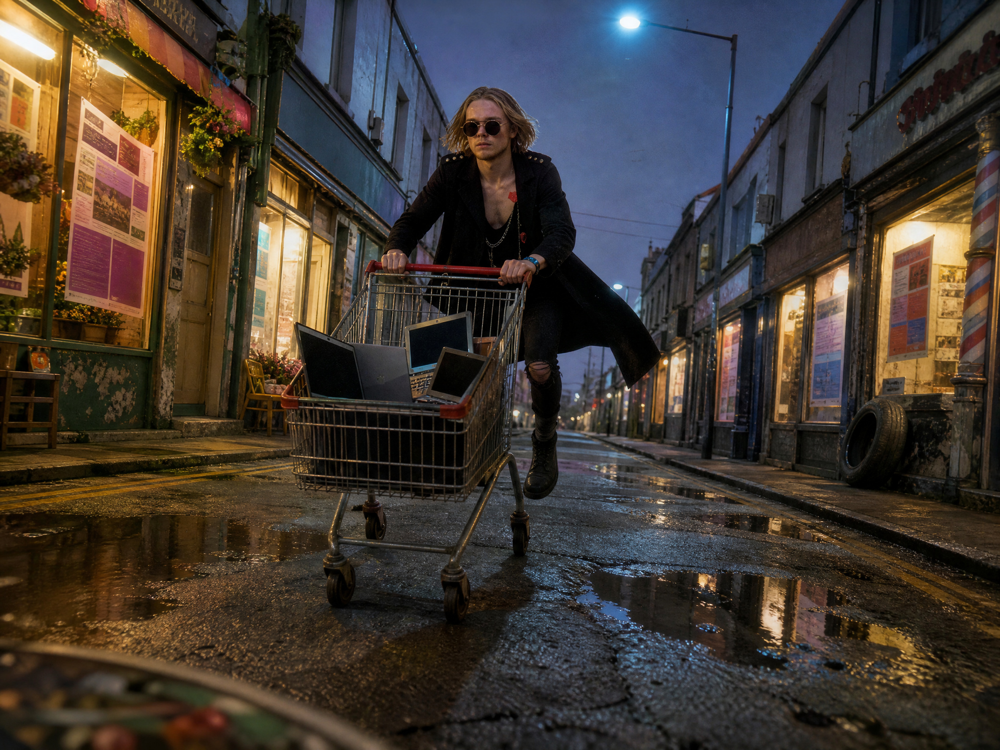

Одним запросом находим тридцать локальных бизнесов без сайта, собираем каждому страницу и таблицу с телефонами, а вторым - получаем план, как им это продать. Даже если ты в жизни ничего не продавал.
Розыгрыш: среди тех, кто зарегистрировался по ссылке и оставил комментарий, трое получат месяц подписки Kimi бесплатно. Победителей объявлю в телеграм-канале.
02
Ставишь K3 Swarm и даёшь первый запрос
Новый чат, в выборе модели K3 Swarm - это и есть рой агентов. Один запрос: тридцать бизнесов без сайта, каждому страница на его настоящих данных с Google Карт, картинка на основе его фасада, свой дизайн и одна таблица на всех.
kimi.com → новый чат
В выборе модели ставишь K3 Swarm
Вставляешь промпт целиком и отправляешь
Промпт 1 · 30 бизнесов и 30 страниц
Найди 30 уникальных локальных бизнесов с физической точкой в городе Симферополь, у которых сейчас нет официального сайта, и преврати каждый в готовое коммерческое предложение с лендингом под продажу.
Требования к отбору:
- Только бизнесы с реальной физической точкой в указанном городе.
- Без дублей.
- Исключить закрытые навсегда.
- Предпочитать те, по которым есть достаточно публичной информации, фотографии фасада и отзывы клиентов.
Для каждого бизнеса собери премиальный лендинг, заточенный под конверсию:
- Сильный заголовок и ценностное предложение под конкретный тип бизнеса.
- Понятные призывы к действию и убедительные продающие блоки.
- Настоящие отзывы клиентов из Google Maps.
- Максимально точный адрес из Google Maps в блоке с картой.
- Обязательная информация: название, категория, адрес, часы работы, телефон и другие контакты, если они есть.
ДИЗАЙН СТРАНИЦ - ЧТОБЫ НЕ ВЫГЛЯДЕЛО КАК НЕЙРОНКА ЗА МИНУТУ
Стиль страницы задаёт тип бизнеса, а не его нынешний визуал: у большинства этих точек оформление слабое, копировать его не надо. Барбершоп, пекарня и автосервис должны выглядеть по-разному, и каждая страница - заметно дороже, чем сейчас выглядит сам бизнес. Тридцать страниц на одном шаблоне с заменой названия - брак.
С фасада и вывески бери только цветовую гамму как основу и доводи её до премиального вида. Шрифты, логотипы и оформление самого бизнеса не переноси.
Перед вёрсткой каждой страницы назови одной строкой: какой у неё характер, какие два шрифта и какой акцентный цвет.
Вёрстка:
- Первый экран: название крупно, одна фраза, чем бизнес хорош, и кнопка звонка. На телефоне кнопка звонка видна без прокрутки.
- Блоки идут в разном ритме, а не одинаковыми секциями подряд: где-то картинка во всю ширину, где-то две колонки, где-то одна фраза крупным шрифтом, где-то список на тонких линиях.
- Отзывы подаются цитатами с именем и оценкой, крупно, как главный аргумент, а не мелкими карточками в ряд.
- Адрес, часы и карта стоят одним блоком, который читается за секунду.
- Внизу страницы ещё раз кнопка звонка.
Шрифты:
Два шрифта, не больше. Не использовать Inter, Roboto, Montserrat, Open Sans, Poppins. Шрифт подбирай под характер бизнеса.
Техника:
- Блоки разделяй тонкими линиями в один пиксель, а не карточками с тенями.
- Один акцентный цвет на страницу, и только в двух-трёх местах.
- Анимации только лёгкие: заголовки и блоки проявляются при прокрутке. Ничего не дёргается и не прыгает.
- Размеры шрифтов и отступы подстраиваются от телефона до большого экрана.
Запрещено:
Фиолетово-синие градиенты. Эмодзи. Наборные иконки. Карточки с тенями и большими скруглениями. Шаблон «заголовок, подзаголовок, три колонки с иконками». Одинаковая вёрстка у разных бизнесов.
Главное изображение:
По каждому бизнесу изучи реальные фотографии фасада и публичные визуальные источники, найденные во время исследования, и сгенерируй качественную картинку для первого экрана, основанную на настоящем облике точки.
Картинка обязана:
- Сохранять узнаваемые реальные детали: стиль вывески, композицию фасада, цветовую палитру точки, ощущение района, категорию бизнеса.
- Выглядеть премиально и быть готовой к постановке на лендинг.
- Не выглядеть как сырой скриншот из карт или дешёвый снимок с улицы.
Таблица Excel:
Собери сводную таблицу, строка на каждый бизнес:
- Название
- Категория
- Точный адрес из Google Maps
- Часы работы
- Контакты
- Ссылка на карточку в Google Maps
- Адрес лендинга
- Угол захода в продаже
- Аргументы для разговора
- Почему этому бизнесу нужен сайт
- Какое ценностное предложение предложить
- Самые сильные сигналы доверия из отзывов
- Самая сильная визуальная и брендовая возможность
Дополнительно:
- Google Maps - источник истины по точному адресу.
- Только настоящие публичные отзывы, отзывы не выдумывать.
- Аргументы для разговора должны звучать как обращение премиального веб-агентства к локальному бизнесу, а не как шаблонный текст от нейронки.
На выходе:
30 профилей бизнесов, 30 лендингов, картинка первого экрана для каждого, и одна таблица Excel со всеми данными, адресами страниц и аргументами для продажи.
Город: Симферополь
Город в промпте стоит два раза - в первой строке и в самом конце. У нас Симферополь, ты ставь свой в обоих местах.
03
Смотришь, как работает рой
Искать сам он не идёт: разбивает задачу по нишам и набирает пять агентов-исследователей. Кафе и пекарни, салоны красоты, автосервисы, мастерские, розница - и все ищут одновременно.
Открываешь Компьютер Кими → окно любого агента
Видно, как он прямо в Google Картах открывает карточку бизнеса и забирает название, рейтинг, отзывы
В конце первой волны он сам отсеивает тех, у кого сайт есть или кто закрылся. У нас было 46 кандидатов, осталось 30
04
Проверяешь руками
На слово не верим. Один бизнес из списка проверяешь сам.
Берёшь любой бизнес из таблицы
Ищешь его в Google Картах
Сверяешь адрес, отзывы, телефон
Кнопки «сайт» в карточке нет - бизнес существует, данные совпадают

Часть 2Тридцать страниц разом
05
Забираешь 30 страниц и таблицу
Исследователей он отпускает и набирает новую команду - пять агентов-верстальщиков, каждому по шесть бизнесов. Страницы собираются параллельно, все сразу.
В окне любого агента видно, что он делает прямо сейчас: генерит картинку первого экрана, собирает страницу, проверяет, что телефон нажимается и карта стоит на месте
В конце - витрина со всеми тридцатью страницами
На каждой странице: кнопка звонка, встроенная карта с точным адресом, живые отзывы клиентов
Таблица Excel: адреса, телефоны, ссылки на карточки в картах, ссылки на страницы и угол захода к каждому бизнесу
06
Второй промпт - план продажи
В том же чате. Он соберёт сценарий от первого звонка до предоплаты - под человека, который продаёт первый раз в жизни. И для каждого из тридцати бизнесов: зачем именно ему сайт и первые фразы звонка.
Промпт 2 · сценарий продажи
Теперь собери полный сценарий продажи этих 30 сайтов: от первого звонка до предоплаты и сдачи.
Важно: продавать будет человек, который никогда не продавал и, возможно, впервые в жизни звонит незнакомому человеку с предложением. Он не знает терминов продаж, волнуется и может растеряться посреди разговора. Всё пиши для него: простыми словами, без жаргона продажников, так, чтобы текст можно было прочитать с листа и не звучать как робот.
ИССЛЕДОВАНИЕ
Сначала изучи исследования и разборы успешных холодных продаж локальному бизнесу: что реально повышает шанс сделки, какие первые фразы работают, где чаще всего теряют клиента. Опирайся на исследования с замерами и на практиков, которые продают сайты локальному бизнесу, а не на общие советы.
У каждой цифры укажи источник и год. Отделяй данные про продажи крупным компаниям от данных про малый локальный бизнес и не переноси одно на другое.
Учитывай страну, где находится город: какие мессенджеры и соцсети там реально работают и какими пользуется бизнес, как одному исполнителю работать официально и выдавать клиенту чек, в какой валюте цены.
Изучи, как операторы связи в этой стране помечают звонки как спам и что из этого следует для обзвона с личного номера.
В конце перечисли, на какие источники опирался.
Главный принцип: мы приходим с подарком, а не с предложением. Сайт уже собран, мы его показываем, а не предлагаем сделать. Денег до того, как человек посмотрел сайт, не просим и цену первыми не называем.
ЗАЧЕМ ЭТОМУ БИЗНЕСУ САЙТ - САМОЕ ВАЖНОЕ
Продавец сам должен понимать, зачем конкретному бизнесу сайт, иначе он не сможет это объяснить. «Сайт нужен всем» - не аргумент.
1. Общий блок: зачем локальному бизнесу сайт, если у него уже есть карточка в картах и соцсети. Что сайт даёт такого, чего не дают карты и соцсети: в клиентах и в деньгах. С цифрами из исследований, где они есть.
2. Для каждого из 30 бизнесов - одна конкретная причина, на его данных. Ищи её в отзывах: на что жалуются клиенты и что сайт бы решил. Например: «не мог дозвониться», «непонятно, сколько стоит», «не знал, что вы работаете в воскресенье», «долго искал вход». Плюс что бизнес теряет прямо сейчас без сайта.
3. Как донести эту причину владельцу за одну-две фразы, простыми словами, без маркетинговых терминов.
ДОВЕРИЕ - У НОВИЧКА НЕТ ПОРТФОЛИО И ОТЗЫВОВ
- Сделай одностраничный сайт-визитку исполнителя: кто я, как работаю по шагам, что входит, условия оплаты, контакты. Туда же - 3-5 лучших страниц из этих 30 как примеры работ.
- Что говорить, если спрашивают про опыт, отзывы, портфолио и работаю ли я официально. Работаем официально, в форме, принятой в этой стране для одного исполнителя: клиент получает чек.
ЭТАП 0. ПОДГОТОВКА НОВИЧКА
- Что открыть перед собой до звонка: страницу бизнеса, его карточку в картах, строку в таблице, шпаргалку.
- Как побороть страх первого звонка и что на самом деле происходит в худшем случае.
- Как отрепетировать: прочитать вслух, потренироваться на знакомом, записать себя.
- С кого начинать: первые звонки делать бизнесам, которые меньше всего жалко потерять, а самые перспективные оставить на потом, когда рука набита.
- Что делать, если растерялся, забыл текст или не знаешь, что ответить: готовые фразы, чтобы выиграть время или вежливо перезвонить позже.
- Сколько звонков в среднем нужно на одну сделку по данным исследований, чтобы отказы не выбивали из колеи. Считать звонки, а не продажи.
- Как распределить 30 звонков по дням и времени, чтобы оператор не пометил номер как спам. В какое время лучше звонить бизнесам разных типов.
- Как вести таблицу после каждого звонка.
Дальше разложи сценарий по этапам. На каждом этапе нужны дословный текст для каждого случая и понятное следующее действие.
ЭТАП 1. ЗВОНОК
Трубку взял владелец:
Первые 10 секунд: кто я и сразу причина звонка, со ссылкой на их отзывы и рейтинг. Не начинать с вопросов «удобно говорить?», «не отвлекаю?», «есть минутка?» - по исследованиям они снижают шанс. Дальше: «я искал ваш сайт, не нашёл, и сделал вам его. Можно скину ссылку посмотреть?»
Случаи, на каждый свой текст:
- Согласился посмотреть. Спрашиваем, куда удобнее отправить: в мессенджер, которым в этой стране пользуются чаще всего, или СМС. Ссылки на страницы не диктуем, а спрашиваем так, чтобы найти самому: «найду вас в мессенджере по этому номеру?» или «как называется ваша страница?». Отправляем сразу, пока человек на линии, говорим «отправил, гляньте» и договариваемся, когда созвонимся, чтобы узнать впечатление.
- Трубку взял не владелец, а администратор или сотрудник. Как узнать, кто решает, и взять его личный номер, чтобы написать ему или позвонить. Если номер не дают - оставить ссылку администратору с просьбой передать владельцу и спросить, когда владелец будет на месте.
- Владелец отвечает сам, но решает партнёр или жена. Как выйти на второго человека.
- «Сейчас неудобно». Договориться о конкретном времени перезвона или сразу скинуть ссылку, чтобы посмотрел, когда будет время.
- «Откуда у вас мой номер?» Честно: из карточки бизнеса в картах.
- «Сколько стоит?» прямо на звонке. Не уходить от ответа грубо: сначала посмотрите, понравится - обсудим, и назвать вилку.
- «Это развод? Вы мошенники?» Мы ничего не просим и ничего не продаём на этом звонке, просто показываем готовый сайт.
- «Не интересно» или сразу бросил трубку. Одна короткая вежливая фраза, если успели, и закончить. Повторно не звонить, в таблице пометить отказ.
Трубку не взяли:
- Перезвонить в другое время дня. Сколько попыток, в какие дни и в какое время.
- Параллельно написать: СМС или в мессенджер, который реально работает в этой стране, или на страницу бизнеса в соцсети. Первое сообщение без ссылки: кто пишет, почему именно им, и вопрос «скинуть ссылку посмотреть?». Ссылку отправляем после ответа.
Номер не отвечает совсем, не существует или это другой бизнес - пометить в таблице и перейти к следующему.
Альтернатива звонку: бизнес находится рядом, можно прийти лично и показать сайт на телефоне. Когда это лучше звонка, что сказать с порога и как не отвлекать от клиентов.
ЭТАП 2. ОТПРАВКА ССЫЛКИ
Сообщение со ссылкой: без цены и без пакетов. Одна ссылка, одна фраза о главной причине, зачем им сайт, честное предупреждение, что страница временная и через 7 дней будет снята, и мягкий вопрос. Срок настоящий: через 7 дней страницу действительно снимаем.
ЭТАП 3. ПОСЛЕ ТОГО КАК ОТПРАВИЛИ
Дай точные сроки на основе исследований: через сколько часов или дней писать и что именно.
- Сообщение не прочитано.
- Прочитано, но молчит.
- Посмотрел и ответил коротко: «ок», «посмотрю», «спасибо».
- Последнее сообщение перед снятием страницы. После него больше не пишем.
Как перевести переписку в созвон или встречу: когда это нужно, какой фразой предложить, что показать на созвоне.
Случаи после просмотра:
- Нашёл ошибку в данных о своём бизнесе. Поблагодарить и сразу исправить.
- Хочет правки до оплаты. Одну-две мелкие правки сделать сразу, крупные - после предоплаты.
- «Подумаю» или «посоветуюсь с партнёром». Договориться о конкретной дате ответа.
- «У нас племянник или знакомый сделает». Что ответить без давления.
- Хочет не сайт, а что-то другое: соцсети, рекламу. Записать как отдельную возможность.
- Отказ. Вежливо попрощаться, страницу снять, оставить свой контакт на будущее.
- Ответил «нравится, а что дальше». Переходим к этапу 4.
ЭТАП 4. ЦЕНА
Как назвать цену и что входит: правки, перенос на их домен, сроки. Как произнести цену уверенно, если называешь её первый раз в жизни.
Домен принадлежит клиенту, а не нам. Клиент регистрирует его сам, пока мы на созвоне и подсказываем. Паспортные и личные данные клиента не собираем.
Сколько клиент будет платить потом каждый год: домен, хостинг. Сказать это заранее, чтобы не было сюрпризов.
Как отвечать на возражения: сначала пауза и уточняющий вопрос, что именно смущает, потом короткий ответ. Без длинных речей в ответ на возражение.
Возражения, на каждое свой текст: «дорого», «нет времени», «в нашей сфере сайт не нужен», «нам хватает карт и соцсетей», «сайт у нас уже был, толку ноль», «а кто его будет вести и обновлять», «пришлите на почту», «а если не понравится - вернёте деньги?».
Торг: как удержать цену и что можно убрать из состава вместо скидки.
Цену предложи сам: изучи, сколько в этом городе берут за такой лендинг, и дай вилку в местной валюте с обоснованием. Отдельно скажи, с какой цены начинать новичку без портфолио.
ЭТАП 5. ПРЕДОПЛАТА
- Сколько брать предоплатой и когда остаток.
- Оплата официально, в форме, принятой в этой стране для одного исполнителя, клиент получает чек. Договор - готовый шаблон из интернета со своими данными, одной строкой, без подробностей.
- Согласился, но не платит. Когда и как напомнить.
- До оплаты страница остаётся на временной ссылке, ничего не подключаем и не доводим.
ЭТАП 6. ПОСЛЕ ОПЛАТЫ
- Как перенести сайт с временной ссылки на домен и хостинг клиента: по шагам, что для этого нужно от клиента, какой хостинг взять и сколько он стоит в год. Если сайт нельзя забрать с временной ссылки файлами - скажи прямо и предложи рабочий способ.
- Правки: сколько кругов входит в цену, что делать, если клиент просит правки без конца.
- Когда получаем остаток.
- Как после сдачи попросить отзыв и рекомендацию знакомым владельцам бизнеса.
- Что можно предложить этому клиенту дальше за отдельные деньги.
ПРОВЕРКА ПЕРЕД ОТПРАВКОЙ
Перед отправкой ссылки любому бизнесу проверь на его странице всё, что написано про сам бизнес: телефон, услуги, адрес, годы работы. Всё, чего нет в публичных данных, убери.
ТОН
Тексты должны звучать как живой человек из небольшого веб-агентства, а не как робот из колл-центра. Короткие фразы, без канцелярита.
ОТДАЧА
1. Полный сценарий отдельным документом Word, по этапам и случаям, чтобы во время звонка можно было быстро найти нужный ответ.
2. Шпаргалка на одну страницу: что говорить на звонке и короткие ответы на пять самых частых возражений. Её держат перед глазами во время разговора.
3. Сайт-визитка исполнителя.
В таблицу Excel добавь колонки:
- «Зачем им сайт»: одна конкретная причина для этого бизнеса, из его отзывов.
- «Первые фразы звонка»: для каждого из 30 бизнесов своё начало разговора, на его отзывах и его сильной стороне, рядом с телефоном.
- «Соцсети и мессенджеры»: страницы бизнеса в соцсетях и мессенджерах, если они есть в открытом доступе.
- «Кто решает»: имя и личный контакт владельца, когда узнали.
- «Статус»: выпадающий список - не звонили · не взяли трубку · ссылка отправлена · смотрит · думает · созвон назначен · цена названа · ждём предоплату · оплачено · сдан · отказ.
- «Следующий шаг и дата»: что делаем дальше и когда.
Сценарий продажи в Word - по этапам и случаям, чтобы во время звонка быстро найти ответ
Шпаргалка на одну страницу - держишь перед глазами во время разговора
Сайт-визитка исполнителя - вместо портфолио
Новые колонки в таблице: «Зачем им сайт», «Первые фразы звонка», статус и следующий шаг
07
Звонишь и продаёшь
Ты приходишь не с предложением, а с подарком. На звонке не надо ничего продавать - нужно одно «да, скидывайте».
«Я искал ваш сайт, не нашёл - и собрал его сам, уже готовый. Можно скину ссылку посмотреть?»
Отправляешь ссылку без цены и с честным предупреждением: страница временная, через семь дней сниму
Молчит - напоминаешь через пару дней
Понравилось - называешь цену
Согласился - берёшь предоплату, и только после неё переносишь сайт на его домен
Сколько брать. Такой сайт спокойно можно сдавать от 30 000 ₽. Это на момент съёмки - у тебя в городе может быть иначе.
Норма звонков. Одна сделка на 30-90 дозвонов. План ставь в звонках, а не в продажах: сделал свои пять звонков за день - день удался.
Голова и промпты всё ещё на тебе: нейронка находит и собирает, а звонишь и договариваешься ты. И задачи через Swarm жрут лимит заметно быстрее обычных.